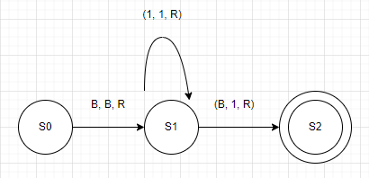

Turing Machines
Introduction
-
The Turing Machine (TM) was invented in 1936 by Alan Turing.
-
It is a basic abstract symbol-manipulating device that can be used to simulatethe logic of any computer that could possibly be constructed.
-
Although it was not actally constructed by Turing, it's theory yielded many insights.
-
A Turing Machine consists of 3 components:
-
An infinitley long tape made up of individual cells. Each cell can contain a single character - typically 1, 0, or B(Blank)
-
A read/write head pointed at an individual cell.
-
A controller (aka finite-state machine) which instructs the read/write head what to do.
-
-
Anything that is possible to (mathematically) compute could be programmed on a Turing Machine.
Operation
-
initially the tape is inscribed with a sequence of characters, the input.
-
The operation of the Turing Machine is controlled by the finite- state machine (controller)
-
The operation takes place as a sequence of steps known as transitions.
-
the controller decides for a given (input, character, state) pair, (output character state) pair - known as a transition.
-
each transition involves:
- Reading
- Writing
- Moving
- Updating (state)
-
Transitions can be expressed in the following ways:
-
state transition diagram
-
state transition table
![Example of a state transition table]()
-
-
The above state transition table and diagram shows a singular transition which says:
- figure it out yourself
-
The output is the sequence of characters left on the tape when the Turing Machine halts.
States
-
At any given time, a TM is said to be in a particular state. States are usually denoted by the letter S followed by a number (ex. S2) is taken to mean state 2.
-
S0 is conventionally used to denote the initial state. This is the state the TM is in before it starts to operate.
-
A double circle is used to denote the final or halting state. This is the state the TM is in when it finishes.
-
For example:

Significance
-
Earlier we asked the question: How do we define computability?
-
Now we can provide the answer: A task is computable if it can be carried out by a Turing Machine